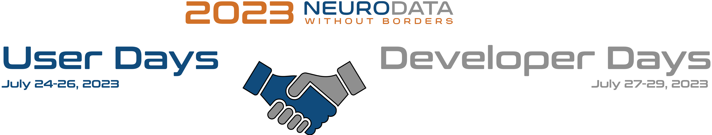

The final report for the 2023 NWB User Days and Developer Days is now available on GitHub (PDF) (LaTeX (on Overleaf).
Registration is now closed. If you would like to be added, please contact the organizers and we may be able to accommodate your request.
Housing: Housing will be provided onsite on the Janelia research campus. For details about transportation and logistics please see here
Travel: Travel support is not provided. Limited funds may be available to support attendee travel. Once attendance has been confirmed, we will contact you to collect additional information regarding your travel details.
Directions: The Janelia Research Campus is located in Loudoun County, Virginia – just 30 miles from Washington, DC, and about eight miles north of Dulles International Airport (IAD). For directions see https://www.janelia.org/directions
Site chair: Jakob Voigt
Program chair (User Days): Oliver Rübel and Ben Dichter
Program chair (Developer Days): Oliver Rübel and Ryan Ly
Administrative Support: Janine Stevens
The Neurodata Without Borders project is an effort to standardize the description and storage of neurophysiology data and metadata. NWB enables data sharing and reuse and reduces the energy barrier to applying data analytics both within and across labs. NWB has seen wide adoption in the neurophysiology community, and there are now over 100 datasets on the DANDI Archive in NWB, including data from the Allen Institute and the International Brain Laboratory.
The User Days will train users how to convert their data to NWB and publish it on the DANDI Archive. We will work with members of the neuroscience community that want to apply NWB to their datasets. We will train attendees, starting from the basics and proceeding to advanced data engineering techniques to maximally utilize the features of the HDF5 and Zarr backends. Attendees will also be trained in the creation of NWB extensions.
The Developer Days will bring neuroscientists, tool builders, and research software engineers together to further the development of the NWB software ecosystem, including the data standard, core software packages, official tools, and community tools. Members of the community will exchange ideas and best practices for using NWB and the libraries, share NWB based tools, surface common needs, solve bugs, make feature requests, brainstorm about future funding and collaboration, and make progress on current blockages.
Note: This event is meant to foster community and collaboration around NWB, not competition. As such, this is really more of a “workshop” or “tutorial” than a “hackathon.” There will be no judges nor prizes. Participants will be expected to bring data from their own lab, bring their own tool, or other relevant project and/or collaborate with others to build integration with NWB.
There will be 3 days for user training and engagement followed by 3 days for developer hackathon. We will have a joint user & developer social. The event will begin in the morning on Monday. If you are attending the User Days, please plan to arrive on Sunday and depart in the evening on Wednesday after the social. If you are attending the Developer Days, then plan to arrive in the afternoon on Wednesday to attend the social and plan to depart in the afternoon on Saturday after completion of the event. Below the current draft of the agenda. The agenda is work in progress! Further details will be announced here as they become available Download Agenda
To ease collaborative editing of projects we are managing projects in the following Google Docs:
To create a new project, simply:
Please see the Code of Conduct for all NWB events.
This website and related content were prepared as an account of or to expedite work sponsored at least in part by the United States Government. While we strive to provide correct information, neither the United States Government nor any agency thereof, nor The Regents of the University of California, nor any of their employees, makes any warranty, express or implied or assumes any legal responsibility for the accuracy, completeness, or usefulness of any information, apparatus, product, or process disclosed, or represents that its use would not infringe privately owned rights. Reference herein to any specific commercial product, process, or service by its trade name, trademark, manufacturer, or otherwise, does not necessarily constitute or imply its endorsement, recommendation, or favoring by the United States Government or any agency thereof, or The Regents of the University of California. Use of the Laboratory or University’s name for endorsements is prohibited. The views and opinions of authors expressed herein do not necessarily state or reflect those of the United States Government or any agency thereof or The Regents of the University of California. Neither Berkeley Lab nor its employees are agents of the US Government. Berkeley Lab web pages link to many other websites. Such links do not constitute an endorsement of the content or company and we are not responsible for the content of such links.